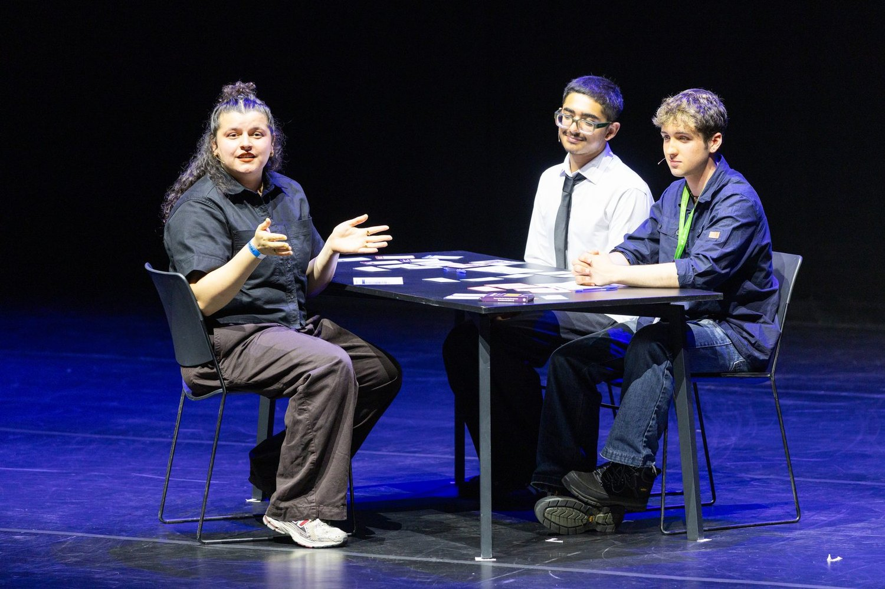
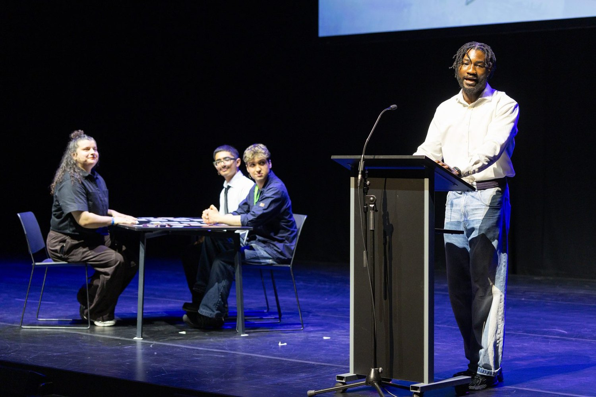
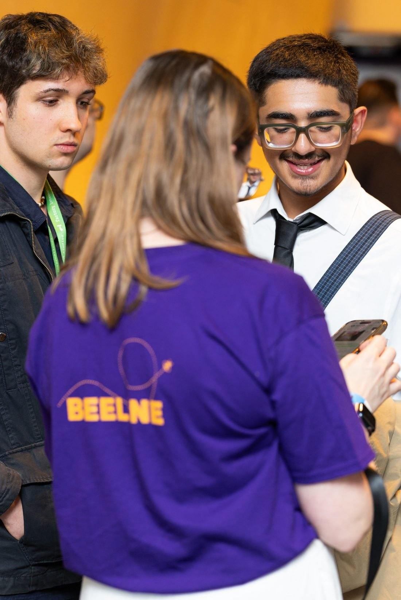
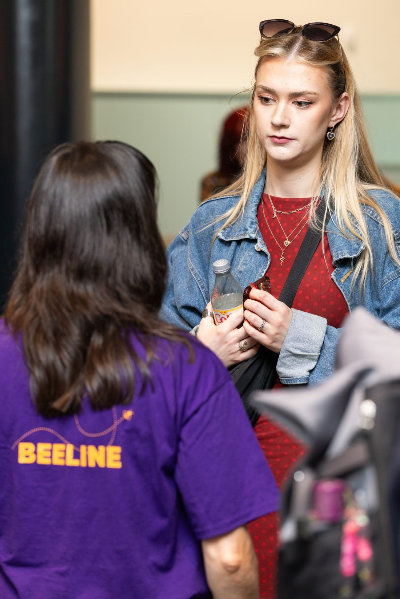

SIDE QUEST · THE DAY THE WORK WENT PUBLIC
MBacc Summit
Beeline?BEELINEThe Greater Manchester service that helps young people up to 25 explore careers and find a next step. was the centrepiece of the 2026 summit, in front of schools, employers and organisations from across Greater Manchester, in the same month the MBacc?MBACCThe Greater Manchester Baccalaureate, a framework that shows young people technical and academic routes into work. became national policy.
The date everything pointed at
The summit was the fixed point the delivery plan was built backwards from. It decided what had to be finished, what could be learned afterwards, and what was not going to make it.
ON STAGE · YOUNG PEOPLE DID THE DEMONSTRATING
The release was walked through on stage by young people playing the Discovery Game. They had the cards, the tally and the microphone, and the room watched a real session. It is the Influence part of the Lundy model?LUNDY MODELA model for children and young people’s participation, built on four parts: space, voice, audience and influence. in its most literal form: the people who shaped it are the ones who present it to the people who fund it.


Running the floor
Away from the stage, the toolkit was in people’s hands all day: schools and organisations trying the cards, asking what it costs them to run, and telling us what would stop them using it. Those conversations went into the design assurance?DESIGN ASSURANCECollecting feedback from partners and young people in one log, so each point leads to a fix, a research question or a decision. log the same way a session in a youth centre does.


PHOTOGRAPHS FROM THE MBACC SUMMIT 2026, USED WITH CONSENT
THREE THINGS THE DAY SETTLED
- 01A public date is a design constraint. Knowing exactly what the room would see in July made every scoping argument in the months before it concrete.
- 02Watching a service used in front of an audience surfaces things no test session does. Both the parts people leaned in for and the parts that needed explaining went into the next round.
- 03Putting young people on the stage is what turns consultation into influence. Partners in the room remembered that.